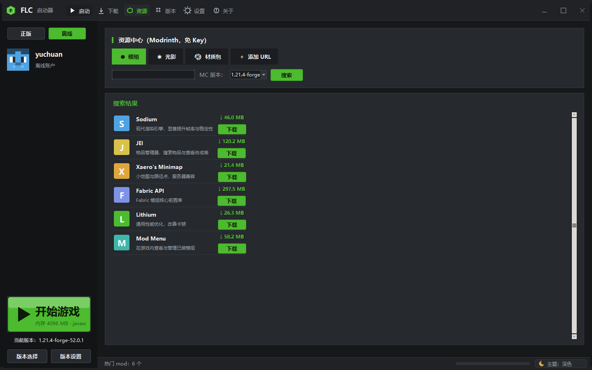

资源中心
模组 · 光影 · 材质包，搜索即装。数据来自 Modrinth，免 API Key。
模组
搜索 Modrinth 上的模组，按当前 MC 版本过滤，点下载自动装到 mods 目录。
光影
光影包搜索下载，自动放到 shaderpacks 目录，进游戏直接选。
材质包
材质包搜索下载，自动放到 resourcepacks 目录。
添加 URL
站外资源直接粘贴直链下载，也会自动归到对应目录。

模组 · 光影 · 材质包，搜索即装。数据来自 Modrinth，免 API Key。
搜索 Modrinth 上的模组，按当前 MC 版本过滤，点下载自动装到 mods 目录。
光影包搜索下载，自动放到 shaderpacks 目录，进游戏直接选。
材质包搜索下载，自动放到 resourcepacks 目录。
站外资源直接粘贴直链下载，也会自动归到对应目录。
